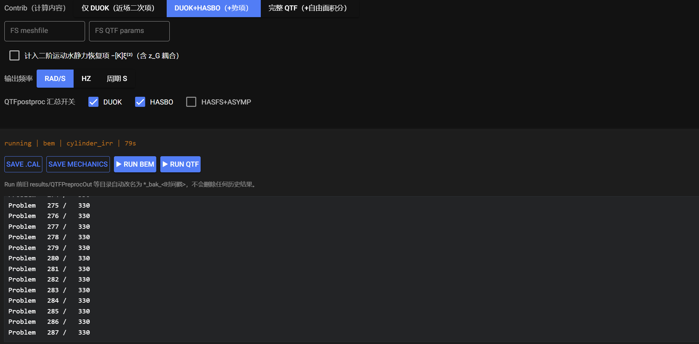

Parameter Reference
The location of each panel is shown in Interface Overview and Workflow. Most defaults follow Nemoh's recommendations; consult the Nemoh manual for advanced tuning.
Environment
| Parameter | Meaning | Default |
|---|---|---|
| Rho kg/m³ | water density | 1025.0 |
| Gravity m/s² | gravitational acceleration | 9.81 |
| Water depth m | water depth (finite depth; a large value approximates infinite depth) | 80.0 (example value — use your site value) |
| Bodies | number of floating bodies | 1 (single body only in this version) |
Wave measure points
Space-fixed x y points where Nemoh reports free-surface elevation / wave time histories. One x y per row, paste two Excel columns directly; 点数 + 生成 fills rows by count. Leave the single default row 0 0 when not needed (no redundant points are written).
HYST — Hydrostatics
| Parameter | Meaning |
|---|---|
| Symm XOZ 0/1 | symmetry about the XOZ plane (first two columns of the Nemoh mesh header: 2 0 = no XOZ symmetry, 2 1 = symmetric) |
| Waterplane X Y | origin of the waterplane in X, Y |
| Tcol | draft adjustment in Z |
| IRR | remove irregular frequencies |
| COG x y z | centre of gravity |
Note: comparisons show the current hydrostatics results are driven by COG and Rho / Gravity (hydrosCal finds the equilibrium attitude from the waterplane). Symm / Waterplane / Tcol are kept for compatibility with desktop parameter files and do not change the SUMMARY numbers.
Hydrostatics output goes to mesh/ (Hydrostatics.dat, Inertia_hull.dat, GC_hull.dat, KH.dat); SUMMARY summarises those files. Mechanics/ is created automatically and node / panel counts are taken from the mesh — no desktop-generated files are required.
Body set — degrees of freedom
Surge, Sway, Heave, Roll, Pitch, Yaw. Only ticked DOFs enter the radiation solve.
MASS / Mechanics
| Parameter | Written to | Description |
|---|---|---|
| Mass (kg) | Mechanics/Inertia.dat |
structural mass |
| Moment of inertia tensor (kg·m²) | Mechanics/Inertia.dat |
3×3 tensor (default 0 = let the program handle it) |
| Added damping D11..D66 | Mechanics/Badd.dat |
extra linear damping (e.g. damping devices) |
| Added stiffness S11..S66 | Mechanics/Km.dat |
extra stiffness (e.g. mooring / elastic support) |
Matrix blocks can be pasted from Excel. Values are written when Save Mechanics is pressed; keep them at 0 unless extra damping or stiffness is required.
Load Cases (Nemoh.cal frequencies / headings)
| Parameter | Meaning |
|---|---|
| Freq type | 1,2,3 = [rad/s, Hz, s] |
| Min freq / Max freq / N freq | lower limit, upper limit and count (Nemoh interpolates linearly) |
| Min dir° / Max dir° / N dir° | heading limits and count in degrees (0° = along +X) |
Solver（input_solver.txt）
| Parameter | Meaning | Default |
|---|---|---|
| GQ | Gauss quadrature order: N² nodes per panel, N = 1–4 | 2 |
| eps_zmin | source / field point lift: zmin = eps_zmin × body_diameter, avoids singularities |
0.001 |
| Solver | 0 = direct method (Gaussian elimination) | 0 |
| GMRES checkbox | switch to the GMRES iterative solver (faster on large meshes) | off |
| Restart | GMRES restart length | 10 |
| Rel Tol | relative convergence tolerance | 1e-5 |
| Max iter | maximum iterations | 1000 |
GMRES guidance: the default direct method covers most cases; enable GMRES when mesh size makes memory or time prohibitive. 10 / 1e-5 / 1000 suits most models — if the log shows stalled convergence, raise Restart to 30–50.
Post Set
| Parameter | Meaning |
|---|---|
| IRF a b c | frequency range for the radiation IRF output: min / step / max |
| Kochin a b c | Kochin function angular range, recommended 361 0 360 (one per degree over the full circle) |
| Free surface a b c | free-surface output grid definition (min / step / max) |
| Out freq type | 1,2,3 = [rad/s, Hz, s] |
| Show pressure | output panel pressure distribution |
| Calculate RAO | compute RAOs (MASS parameters must be saved first) |
QTF Set

| Parameter | Meaning |
|---|---|
| 启用 QTF 计算 | master switch (RUN QTF requires it) |
| QTF freq set: N / Min / Max | count, lower and upper radial frequency for the QTF |
| heading combination | 单向 β1=β2 (single heading) or 双向 全组合 (full bi-directional combination) |
| Contrib | 1 DUOK only (near-field term); 2 DUOK+HASBO (+ potential terms); 3 full QTF (DUOK+HASBO+HASFS+ASYMP, requires free-surface integration) |
| FS meshfile | free-surface mesh file (Contrib 3 only; use NA if not applicable) |
| FS QTF params | Re, Nre, NBessel for the free-surface integration (Contrib 3 only) |
| include second-order hydrostatic restoring -[K]^H2 | second-order motion restoring term (with z-G coupling) |
| output frequency | QTFpostProc output type: 1,2,3 = [rad/s, Hz, s] |
| QTFpostproc switches | whether DUOK / HASBO / HASFS+ASYMP enter the total QTF output |
QTF parameter combinations are intricate — follow the QTF chapter of the Nemoh manual.